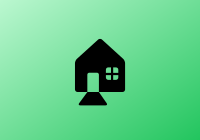

Responsive layout
Detected environment
- Breakpoint
- Viewport
- Input
- Color scheme
- Reduced motion
- Orientation
Breakpoints: mobile < 640px, tablet 640–1023px, desktop ≥ 1024px (based on the viewport, not the window).
Collapsing navigation
Shown only on mobile: tap the menu button.
Shown only from tablet width up: the menu is always visible.
Card grid (1 / 2 / 3 columns)
Table that becomes cards on mobile
| Plan | Price | Users |
|---|---|---|
| Starter | $9 | 1 |
| Team | $29 | 10 |
| Business | $99 | 100 |
Adaptive details

Hover over the box to reveal a tip.
Hover or focus meTip: hover only exists on mouse devices.